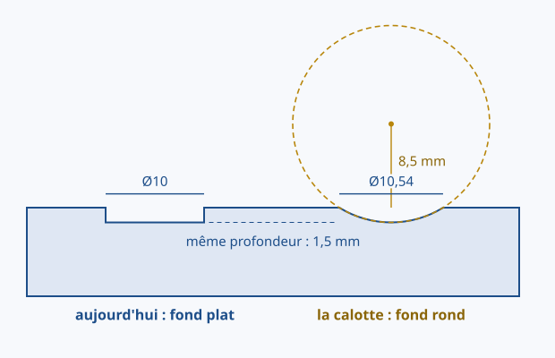

🥄 TP nº1 bis — Le dé, en mieux
Ton dé existe. Il tourne, il se lit, il s'imprime — et ses points sont des trous à fond plat. Sur un dé du commerce, ce sont des calottes : le fond est rond, comme le creux d'une cuillère. Tu vas améliorer ton objet, sur un point, puis décider si ça vaut la peine de le faire vingt fois de plus.
🧭 Comment lire ce TP. En clair, ce que tu fais. En italique coloré, ce que tu dois voir se produire à l'écran — si tu ne le vois pas, ne continue pas : reprends l'étape. Les encadrés orange préviennent des pièges. À la fin de chaque partie, une image te montre ce que tu dois obtenir : compare, tu n'as besoin de personne pour te corriger.
Avant de commencer, deux choses.
🌐 Cette activité demande une connexion Internet, du début à la fin. Onshape fonctionne dans le navigateur et n'a aucun mode hors connexion : sans réseau, la séance ne peut pas avoir lieu, elle se reporte. La connexion se fait avec le compte de la classe, pas avec un compte à ton nom.
Ce TP ne te note pas : on y apprend l'outil. Ce qui s'évalue vient après — et tout cela fonctionne hors ligne, s'imprime, et ne demande aucun compte : le QCM « Le dé, en mieux » (30 questions, en bas de cette page), la synthèse et le lexique.
1 · Ranger avant de commencer — et garder l'original
Améliorer un objet, c'est en faire une version 2. Si on modifie la version 1, on n'a plus rien à quoi comparer — et une amélioration qu'on ne peut pas comparer ne se démontre pas. On travaille donc sur une copie, toujours.
- Ouvre Onshape et connecte-toi avec le compte de la classe.La page Documents s'affiche.
- Ouvre ton document Dé — TON NOM, celui du TP nº1.Ton dé apparaît, avec ses vingt et un creux et ses arêtes adoucies.
- Tout en bas de l'écran, clic droit sur l'onglet Part Studio 1, puis Dupliquer (Duplicate).Un second onglet apparaît juste à côté, nommé Part Studio 1 (1). Ton dé y est identique, arbre des fonctions compris.À savoir avant de commencer : Si tu ne trouves pas Dupliquer, survole les entrées du menu : selon le réglage du compte, Onshape affiche Duplicate. Les icônes, elles, sont les mêmes partout.
- Double-clique sur le nom du nouvel onglet et écris Dé v2.L'onglet s'appelle maintenant Dé v2. L'onglet d'origine n'a pas bougé : c'est ton témoin.
- Travaille désormais uniquement dans l'onglet Dé v2.Le nom de l'onglet actif est écrit en clair au bas de l'écran.
🎯 Tu peux passer à la suite quand : ton document contient DEUX onglets : celui d'origine, intact, et « Dé v2 »
💾 Point de reprise. Tu n'as rien à enregistrer : c'est déjà fait, tout seul, depuis le début. Si le poste redémarrait maintenant, tu retrouverais ton travail exactement ici.
2 · Regarder le défaut, et le nommer
On ne corrige pas ce qu'on n'a pas nommé. Avant de toucher au dé, regarde ce qui ne va pas — et dis-le avec des mots précis.
- Tourne le dé pour voir la face du 1 presque de profil (molette enfoncée, puis déplace la souris).Le creux du 1 se voit en biais : on distingue son bord et son fond.
- Zoome fort sur ce creux (molette).Le fond est plat, et le bord est une arête vive : un angle net, comme le bord d'une pièce de monnaie.
- Compare avec un dé du commerce, si tu en as un sous la main : passe le doigt dans un de ses points.Chez lui, rien n'accroche : le creux est rond. C'est une calotte — la trace qu'une bille laisserait en s'enfonçant un peu.À savoir avant de commencer : Le TP nº1 avait fait ce choix exprès, et l'avait écrit : un cylindre peu profond est plus simple à obtenir. Un modèle n'est jamais l'objet : c'est une simplification qu'on assume et qu'on sait nommer. Aujourd'hui, on lève la simplification.

🎯 Tu peux passer à la suite quand : tu peux dire, en deux mots, ce qui distingue ton creux de celui d'un vrai dé
💾 Point de reprise. Tu n'as rien à enregistrer : c'est déjà fait, tout seul, depuis le début. Si le poste redémarrait maintenant, tu retrouverais ton travail exactement ici.
3 · Mettre l'ancien creux de côté (sans l'effacer)
Une amélioration ne se pose pas par-dessus le défaut : elle le remplace. Il faut donc d'abord retirer l'ancien creux — mais sans le détruire, pour pouvoir revenir en arrière.
- Dans l'arbre des fonctions, à gauche, trouve l'enlèvement de matière de la face du 1 — il s'appelle Extruder 2 (Extrude 2) si tu as suivi l'ordre du TP nº1. Clique-le pour vérifier.Le creux du 1 s'affiche en surbrillance sur le dé : c'est bien lui.
- Clic droit sur cette ligne, puis Supprimer la fonction (Suppress feature).La ligne devient grisée dans l'arbre, et le creux disparaît : la face du 1 est de nouveau lisse.À savoir avant de commencer : Supprimer la fonction n'est pas Supprimer. La première met de côté — la ligne reste, grisée, et un clic droit la réveille. La seconde efface pour de bon. Quand on essaie une amélioration, on garde toujours le chemin du retour.
- Regarde les autres faces : elles n'ont pas changé.Les vingt autres creux sont toujours là, cylindriques. C'est voulu : on améliore un point d'abord, on jugera ensuite.
🎯 Tu peux passer à la suite quand : la face du 1 est redevenue lisse, et l'ancienne fonction est toujours dans l'arbre, grisée
💾 Point de reprise. Tu n'as rien à enregistrer : c'est déjà fait, tout seul, depuis le début. Si le poste redémarrait maintenant, tu retrouverais ton travail exactement ici.
4 · Le plan à 8,5 mm, et le point du centre
Pour creuser une calotte, il faut une bille — et pour poser une bille, il faut lui dire où est son centre. Il n'est pas sur la face : il est au-dessus, dans le vide. C'est tout le geste de ce palier.
- Dans la barre du haut, clique Plan (Plane). Clique la face du 1, choisis Décalage (Offset) et entre 8,5.Un rectangle transparent flotte au-dessus de la face, à la distance demandée.À savoir avant de commencer : D'où vient 8,5 ? La bille fait Ø20, donc 10 de rayon. On veut qu'elle s'enfonce de 1,5 dans la matière. Son centre est donc à 10 − 1,5 = 8,5 au-dessus de la face. Une seule soustraction, et toute la suite en dépend.
- Si le plan part du mauvais côté (vers l'intérieur du dé), clique le bouton d'inversion dans le panneau.Le plan repasse au-dessus de la face, à l'extérieur de la matière.
- Clique Esquisse, puis clique ce nouveau plan.Le plan se met à plat devant toi : on peut dessiner dessus.
- Choisis l'outil Point et pose un point à peu près au milieu.Un point bleu apparaît : bleu veut dire pas encore contraint, il peut donc encore glisser.À savoir avant de commencer : Pose-le à peu près. On ne vise pas à l'œil : c'est la cote qui va le fixer, à l'étape suivante.
- Cote ce point à 25 de deux bords voisins du plan.Le point devient noir : il est contraint, et il ne bouge plus quand on essaie de le tirer.À savoir avant de commencer : 25, c'est la moitié de 50 : le centre exact de la face. Les points du TP nº1 étaient cotés à 11, 25 ou 39 — celui du milieu vaut 25, comme le 1 du dé.
- Ferme l'esquisse.L'esquisse rejoint l'arbre des fonctions, et le point reste visible.
🎯 Tu peux passer à la suite quand : un point noir, coté, flotte au-dessus du centre de la face du 1
💾 Point de reprise. Tu n'as rien à enregistrer : c'est déjà fait, tout seul, depuis le début. Si le poste redémarrait maintenant, tu retrouverais ton travail exactement ici.
5 · La bille, en mode « Retirer »
Le geste neuf de ce TP. Une primitive est une forme toute faite — cube, cylindre, sphère — qu'on pose sans l'esquisser. Et comme toute fonction de matière, elle sait ajouter ou retirer.
- Barre du haut : Primitives, puis Sphère (Sphere).Un panneau s'ouvre et demande un centre et un diamètre.
- Centre : clique le point que tu viens de coter. Diamètre : 20. Mode : Retirer (Remove).La face du 1 se creuse d'un rond doux. La bille elle-même disparaît : il ne reste que son empreinte.À savoir avant de commencer : Si tout le dé disparaît, tu es en mode Nouveau ou Ajouter. Rouvre la fonction et choisis Retirer : c'est le même bouton à trois positions que l'extrusion du TP nº1.
- Tourne le dé et regarde le nouveau creux de profil.Plus d'arête vive : le bord descend en pente douce, et le fond est rond.
🎯 Tu peux passer à la suite quand : la face du 1 porte un creux rond, et le dé n'a pas disparu
💾 Point de reprise. Tu n'as rien à enregistrer : c'est déjà fait, tout seul, depuis le début. Si le poste redémarrait maintenant, tu retrouverais ton travail exactement ici.
6 · Mesurer, comparer — puis décider
Une amélioration se juge, elle ne se proclame pas. Ton dé porte maintenant une calotte et vingt cylindres : c'est le meilleur banc d'essai possible, puisque les deux sont sur le même objet.
- Clique le bord du nouveau creux.En bas à droite, Onshape s'affiche en clair : le diamètre vaut 10,54.À savoir avant de commencer : L'ancien creux faisait Ø10. La calotte est donc plus large de 0,54 mm seulement, et sa profondeur n'a pas changé : le dé garde exactement son allure. Il ne gagne qu'une chose — la douceur du fond.
- Tourne le dé pour voir en même temps la face du 1 et une face voisine.La différence saute aux yeux de profil, et presque pas de face.
- Compte ce que coûterait la même chose partout : un plan et une esquisse par face, soit 6 plans et 6 esquisses, et 21 billes en tout.Le chiffre est là, écrit : c'est le prix de la généralisation.
- Note sur une feuille de brouillon ce que tu décides — généraliser aux 21 points, ou garder cette v2 comme essai — et la raison en une ligne.Ta décision est écrite quelque part. Les deux réponses se défendent ; ce qui ne se défend pas, c'est de ne pas trancher.
🎯 Tu peux passer à la suite quand : tu connais le diamètre du nouveau creux, et tu as tranché sur la suite
💾 Point de reprise. Tu n'as rien à enregistrer : c'est déjà fait, tout seul, depuis le début. Si le poste redémarrait maintenant, tu retrouverais ton travail exactement ici.
7 · Emporter les DEUX versions
Une amélioration se garde à côté de ce qu'elle améliore. Deux fichiers, deux versions : c'est ce qui permettra de les imprimer et de les comparer en main.
- Dans l'onglet Dé v2, clic droit sur la pièce, puis Exporter (Export).Un panneau demande un format et une unité.
- Format STL, unité Millimètre. Nomme le fichier de_v2_TON_NOM.Le fichier arrive dans tes téléchargements, à côté du v1 de la dernière fois.À savoir avant de commencer : Le format et l'unité. Un dé exporté en pouces sort vingt-cinq fois trop grand — et ça ne se voit qu'à l'impression.
- Vérifie que tu as bien les deux fichiers, v1 et v2.Deux lignes dans le dossier des téléchargements, deux noms différents.
🎯 Tu peux passer à la suite quand : deux fichiers STL sont dans tes téléchargements, et leurs noms se distinguent au premier coup d'œil
8 · 🎁 Deux dés, une seule différence
Le plaisir de la fin : rendre la comparaison visible d'un coup d'œil.
- Dans Dé v2, clic droit sur la pièce → Modifier l'apparence (Edit appearance). Choisis une couleur — par exemple un bleu franc.Le dé change de couleur. Sa forme, elle, n'a pas bougé d'un millimètre.
⚠️ Cette valeur est un exemple : ne la recopie pas sans réfléchir, choisis la tienne.
- Fais de même dans l'onglet d'origine, avec une autre couleur.Les deux onglets se distinguent maintenant à la vignette.
- Passe d'un onglet à l'autre, plusieurs fois de suite, en regardant la face du 1.Un seul creux change. Tout le reste est identique — et c'est exactement ce qu'on voulait : améliorer sans abîmer.
🎯 Tu peux passer à la suite quand : on voit d'un regard laquelle est la v1 et laquelle est la v2
💾 Point de reprise. Tu n'as rien à enregistrer : c'est déjà fait, tout seul, depuis le début. Si le poste redémarrait maintenant, tu retrouverais ton travail exactement ici.
➡ Et maintenant ?
Tu sais reprendre un objet qui existe déjà, mettre une fonction de côté sans l'effacer, poser un plan là où il n'y a pas de matière, et creuser avec une forme toute faite. Surtout : tu as comparé avant de décider.
Une amélioration ne se juge pas à l'écran. Tes deux fichiers STL sont là pour être imprimés et comparés en main : le vrai critère, c'est le doigt qui passe dans le creux.
📜 Les traces à garder
Ce que cet atelier t'apprend tient en deux pages, à relire avant l'évaluation et à garder dans ton classeur :
🧠 Prêt·e à t'entraîner ?
Le QCM (questionnaire à choix multiples) qui accompagne ce travail comporte 30 questions sur le code 5e_C7.2. Aucune n'est illustrée : tout se lit dans l'énoncé.
🚀 Ouvrir le QCM d'entraînement
Il porte sur l'amélioration d'un objet qui existe déjà : reprendre, comparer, décider.
🎁 Bonus (facultatif — hors parcours obligatoire)
Ces défis ne sont pas notés et ne comptent pas dans ta progression. Personne n'est pénalisé de ne pas les faire.
- La bille qui ne roule pas. Le creux en calotte a été choisi pour une bille de 20 mm. Reprends le calcul avec une bille deux fois plus petite : la calotte devient-elle plus large ou plus étroite ? Vérifie ton intuition sur le modèle.
- Améliorer sans abîmer. Trouve, dans la salle, un objet amélioré par rapport à une version plus ancienne. Qu'a-t-on gardé identique ? C'est souvent ce qui coûte le plus cher à décider.
- Le doigt et l'écran. Une fois les deux dés imprimés, fais-les toucher à trois personnes sans rien dire. Laquelle des deux versions préfèrent-elles, et pour quelle raison qu'on ne voyait pas à l'écran ?
1. Écris tes réponses sur ta feuille de brouillon.
2. Ouvre ensuite le corrigé, et compare.
📖 Corrigé du Bonus (à ouvrir APRÈS ton essai)
1. La bille deux fois plus petite.
Le calcul :
· bille de Ø10 : son rayon vaut 5 mm (millimètres) ;
· on garde la même profondeur de creux : 1,5 mm ;
· le centre de la bille est donc à 5 − 1,5 = 3,5 mm au-dessus de la face (au lieu de 8,5).
La calotte devient plus étroite : environ Ø7,1 mm, au lieu de Ø10,5 avec la bille de Ø20.
Le point paraît plus petit, et ses bords sont plus raides.
Pour aller plus loin : la largeur vaut 2 × √(5² − 3,5²) = 2 × √12,75 ≈ 7,14 mm.
Pour vérifier sur le modèle : plan décalé de 3,5, sphère de diamètre 10 en mode Retirer, puis mesure du bord du creux.
À retenir : avec une petite bille, il faudrait creuser beaucoup plus profond pour garder un point de Ø10 (jusqu'à 5 mm, une demi-bille).
2. Améliorer sans abîmer.
Un exemple de réponse : la chaise de la salle.
La nouvelle a une assise plus confortable, mais on a gardé sa hauteur et la largeur de son piètement.
Pourquoi : elle doit passer sous les mêmes tables et s'empiler avec les anciennes.
C'est ce que tu as fait avec ton dé v2 :
· tu as gardé la taille du cube, la place des 21 points et leur profondeur de 1,5 mm ;
· seule la forme du creux a changé, et c'est pour cela que tu peux comparer v1 et v2.
Pourquoi cela coûte cher à décider : tout ce qui est autour dépend de ce qu'on garde (les tables, les recharges, les habitudes des utilisateurs).
3. Le doigt et l'écran.
Ta réponse est la tienne : elle est juste si tu as fait toucher les deux dés à trois personnes sans rien dire, et si tu as noté leur raison.
Un exemple de réponse : « Deux personnes sur trois préfèrent la v2 : le doigt glisse dans le creux sans accrocher d'arête.
La troisième préfère la v1 : ses points se voient mieux de loin. »
Ce qu'on ne voyait pas à l'écran : le toucher.
L'arête vive du fond plat accroche, et la poussière y reste ; la calotte, elle, est douce et se nettoie d'un coup de doigt.